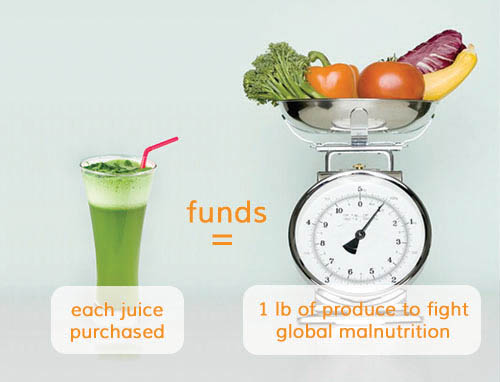

cold pressed juicing
Keeps 3-5 times the amount of nutrients compared to traditional juicing methods
our vision
Customized Juices – Unlimited Menu
Customized Cleanses – By Health Benefit
Affordable Juicing
fight vs world hunger
Each Juice purchased = Funds 1 lb of Produce to fight Global Malnutrition
The KOR of an Apple, the KOR of your Health, the KOR of a Cause.
Follow @korjuice
our vision
juicing
the fight
testimonials
photos
location
KOR Vision
Juicing
KOR Fight

Testimonials
Photos
Location